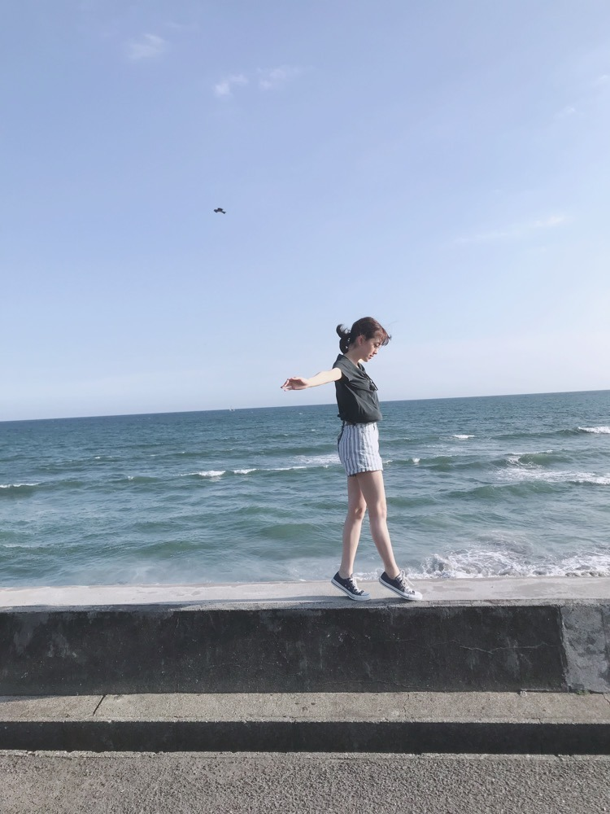
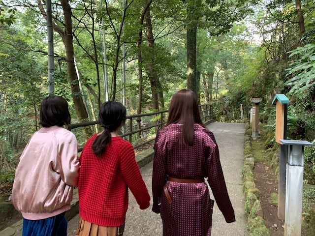

2019/0715Mon今までとこれからと
24枚目シングルの選抜発表がありました
今回も選抜に選んでいただき、嬉しく思います
ありがとうございますm(._.)m
乃木坂のこれからがもっと良くなるように全力で、私なりの形で頑張ります！
飛鳥と久しぶりのシンメで、謎の安心感もあるし、頑張らなきゃだよねって言葉は無くとも飛鳥とならいつも見てる向きとか感情が通じ合えている気が勝手にしています
そして初選抜のかきちゃん、さくらちゃん、あやめちゃんおめでとう☺︎
先輩達と一緒に活動できる時間は正直今までと比べるともうそんなに多くないと思っていて...
だからこそ今いるメンバーにたくさん頼ってほしいしいろんな先輩の姿を間近で見て色んなことを吸収していってほしいです
よろしくね！たくさん話せたらいいな✨
どんな経験も必ず身になるので今を一生懸命楽しんでほしい！
皆さんも温かく迎え入れてあげてください。

玲香さんと過ごす時間もあと少し
寂しいと楽しい気持ちが入り混じってよくわからない毎日です
泣きそうになる毎日と笑っていたい時間
でもやっぱり前へ歩かなきゃ
歩き続けなきゃ
昔の私は防波堤の上が怖くて歩く余裕なんて無くてちょこんと座るのが精一杯で
でも今ならかかとをあげて手を広げて海風の気持ちよさを感じなら歩く余裕があるみたい
これからの乃木坂46がよりよい方向にいきますように...
どんな季節も乃木坂も、好きって言ってもらえるように
私も頑張らなきゃ
24枚目も応援よろしくお願いしますm(._.)m

2019/07/15 15:30
コメント(486)
ほりっぴ～、ナンチです♪
ブログ更新ありがとう～
24thシングル選抜おめでとう
もちろんうれしいけど、今回ほりっぴ～が飛鳥とシンメになってフロントにいる意味をあらためて考えさせられたよ
先輩メンバーが2列目で支えて、そしてほりっぴ～と飛鳥が引っ張って行くんだね
前へ前へ
24thが素敵シングルになることを期待してます
ブログ更新ありがとう～
24thシングル選抜おめでとう
もちろんうれしいけど、今回ほりっぴ～が飛鳥とシンメになってフロントにいる意味をあらためて考えさせられたよ
先輩メンバーが2列目で支えて、そしてほりっぴ～と飛鳥が引っ張って行くんだね
前へ前へ
24thが素敵シングルになることを期待してます
未央奈フロントおめでとう！！
24枚目も活躍を期待してます
大好き⍤⃝♡\♥︎/
24枚目も活躍を期待してます
大好き⍤⃝♡\♥︎/
ブログの更新ありがとうございました。
24枚目のシングルは4期生の加入でフレッシュな部分も加わり、また楽しみです。
未央奈ちゃんが続けている歩み、きっと今の乃木坂46というグループをいい方向に向かわせてくれる一つのいい要素だと思っています。
休息や気分転換とかが重視される今の世の中ですが、未央奈ちゃんはいい意味で逆行している、でもそれができるバイタリティーがある、そんな事を最近確信しています。
だけど無理はしないで下さいね
だけど今を頑張り続けて、歩みを止めない未央奈ちゃんがとても素敵だな、と思います
24枚目のシングルは4期生の加入でフレッシュな部分も加わり、また楽しみです。
未央奈ちゃんが続けている歩み、きっと今の乃木坂46というグループをいい方向に向かわせてくれる一つのいい要素だと思っています。
休息や気分転換とかが重視される今の世の中ですが、未央奈ちゃんはいい意味で逆行している、でもそれができるバイタリティーがある、そんな事を最近確信しています。
だけど無理はしないで下さいね
だけど今を頑張り続けて、歩みを止めない未央奈ちゃんがとても素敵だな、と思います
はい！ずっと応援していきます！
頑張てね、ほりちゃん ^^
頑張てね、ほりちゃん ^^
２４枚目が今後の乃木坂を占う大切なシングルに
なると思います。
だから未央奈が一列目なんだと思います。
世代交代が成功するとよいですね。
でも２５枚目が未央奈にとってバレッタ以来の
節目になるような気がしています。
がんばってくださいね。
なると思います。
だから未央奈が一列目なんだと思います。
世代交代が成功するとよいですね。
でも２５枚目が未央奈にとってバレッタ以来の
節目になるような気がしています。
がんばってくださいね。
堀ちゃんこんばんは。もちろん応援してます！ 楽しみでたまりません。
ただ、堀ちゃんがきっかけで2期生が好きだから、蘭世ちゃんやみり愛ちゃんも入ってほしかったのは本音だけど。桜井さんの最後のシングル、良いものを見れるのを楽しみにしていますよー
ただ、堀ちゃんがきっかけで2期生が好きだから、蘭世ちゃんやみり愛ちゃんも入ってほしかったのは本音だけど。桜井さんの最後のシングル、良いものを見れるのを楽しみにしていますよー
フロントおめでとう！！
えんさくちゃんとか支えてあげてね！！
えんさくちゃんとか支えてあげてね！！
フロントおめでとうございます、飛んでるけど、好き、センターになってほしいよ、
輝いていますよ、家近いよ～応援、応援、応援、私の、未央奈ちゃん
輝いていますよ、家近いよ～応援、応援、応援、私の、未央奈ちゃん
ブログ更新ありがとう！
堀ちゃんが頑張ってるの知ってるよ！
今日も体調管理ねー。
堀ちゃんが頑張ってるの知ってるよ！
今日も体調管理ねー。
未央奈24枚目もがんばれ！！
応援してます！！！
応援してます！！！
24thシングル、選抜入りおめでとう♪♪ メンバーの卒業だったり、新メンバーの加入だったり。いろいろ変化はあっても、グループとしての乃木坂ちゃんも。個人としての堀ちゃんの活躍も常に応援してるよぉ(*´-`)ﾉ
いきなりフロントに選ばれる重圧を一番分かっている未央奈だからこそ、不安だらけの4期をしっかり支えられると思います。
また、飛鳥とのシンメで乃木坂を引っ張って行ってください。
24thシングル期待していますよ。
また、飛鳥とのシンメで乃木坂を引っ張って行ってください。
24thシングル期待していますよ。
未央奈がいる乃木坂が大好きです！ありがとう
乃木坂工事中リアタイで見てました！あしゅと4期生の3人と24thも楽しんでください☺︎
あさってギリギリやけどホットギミック見に行きます！三重県ではホットギミックもいつのまにかここにいるも1つの映画館しかみれへんくて、ホットギミックの方の映画館しか行けへん距離で残念やけど、めちゃくちゃ楽しみにしてます！おかげで受験勉強頑張れます いっつもやる気をくれてありがとう！
ずっとずっと応援してます！
あさってギリギリやけどホットギミック見に行きます！三重県ではホットギミックもいつのまにかここにいるも1つの映画館しかみれへんくて、ホットギミックの方の映画館しか行けへん距離で残念やけど、めちゃくちゃ楽しみにしてます！おかげで受験勉強頑張れます いっつもやる気をくれてありがとう！
ずっとずっと応援してます！
言葉ってとっても素敵ですよね。
でもその言葉を生み出してる
想いや感情ってもっと素敵ですよね？
未央奈の言葉、いつも心に響くもので
唯一無二なものです。
でもその言葉を生み出してる
想いや感情ってもっと素敵ですよね？
未央奈の言葉、いつも心に響くもので
唯一無二なものです。
24枚目シングル、
選抜入りおめでとうございます。
そして、今回もフロントメンバーで活躍することがとても嬉しいです！
飛鳥さんとのシンメも久しぶりですね。
って言っても、そんなに長いこと期間が空いていた気は個人的にはないですね…笑
でも、飛鳥さんとは「この先の乃木坂46をどうしていくか」といつも考える2人だから、今回のシングルがどのような期間になるか楽しみだし、選ばれた4期生の支えとしても頑張っていくんだろうなと思います。
未央奈だからこそ分かり合えることもあると思います。突然、センターに選ばれたこと、右も左もわからないけど毎日必死になって活動したこと。その時、先輩からしてもらったことを今度は自分がしていく番。全部を教えるのではなく、時には先輩の後ろ姿を見て、自分で見て感じたことを吸収して、自分らしさを手に入れたこと。
自分の個性を生かして、ファンの方たちに楽しんでもらう。笑顔になってもらう。アイドルとして学んだことを、未央奈はこれから伝えていく人になっていくんだなって。きっとそれができる人だと思う。
未央奈らしく、グループとしての活動を頑張ってほしいです。その姿をこれからもずっと応援していきたいな。。。
新しいシングルです。
明るく元気に！楽しくいきましょー！！
じゃあ、最後に。
今週末の真夏の全国ツアーは、福岡ですね。
引き続き、体調管理には気をつけて。
ケガにも気をつけてくださいm(_ _)m
メンバーとファンの方々と一緒に、楽しいライブが作れますように。
ではでは、ねこでした。
24枚目シングル、
選抜入りおめでとうございます。
そして、今回もフロントメンバーで活躍することがとても嬉しいです！
飛鳥さんとのシンメも久しぶりですね。
って言っても、そんなに長いこと期間が空いていた気は個人的にはないですね…笑
でも、飛鳥さんとは「この先の乃木坂46をどうしていくか」といつも考える2人だから、今回のシングルがどのような期間になるか楽しみだし、選ばれた4期生の支えとしても頑張っていくんだろうなと思います。
未央奈だからこそ分かり合えることもあると思います。突然、センターに選ばれたこと、右も左もわからないけど毎日必死になって活動したこと。その時、先輩からしてもらったことを今度は自分がしていく番。全部を教えるのではなく、時には先輩の後ろ姿を見て、自分で見て感じたことを吸収して、自分らしさを手に入れたこと。
自分の個性を生かして、ファンの方たちに楽しんでもらう。笑顔になってもらう。アイドルとして学んだことを、未央奈はこれから伝えていく人になっていくんだなって。きっとそれができる人だと思う。
未央奈らしく、グループとしての活動を頑張ってほしいです。その姿をこれからもずっと応援していきたいな。。。
新しいシングルです。
明るく元気に！楽しくいきましょー！！
じゃあ、最後に。
今週末の真夏の全国ツアーは、福岡ですね。
引き続き、体調管理には気をつけて。
ケガにも気をつけてくださいm(_ _)m
メンバーとファンの方々と一緒に、楽しいライブが作れますように。
ではでは、ねこでした。
未央奈さんお疲れ様です！
24枚目も頑張ってください^_^
応援してます！！
4期生の子たちを助けてあげてください
ずっと応援しています
フロントおめでとうございます！！
4期生を支えつつ、未央奈自身が輝いてください！
4期生を支えつつ、未央奈自身が輝いてください！
堀ちゃん、フロントおめでとう!!
飛鳥ちゃんとの、シンメ楽しみにしてます！
飛鳥ちゃんとの、シンメ楽しみにしてます！
documentary観た後だから余計に染み入るなぁ‥
あんまり深刻に考えすぎずに今ある乃木坂を大事にしていかないとね！(^^)
あんまり深刻に考えすぎずに今ある乃木坂を大事にしていかないとね！(^^)
いよいよ未央奈たちが中心となって引っ張っていくことになるね。。
未央奈は乃木坂で凄まじい体験をしてきて、ホントに逞しくなったと思います。
飛鳥ちゃんと言葉を交わさなくても…ってあったけど、それだけまわりがよく見えて何をしたらよいのか自己完結出来るスキルが身に付いているんだよね。。
あとは実行あるのみ！
やりがいあるなぁ…！
未央奈は乃木坂で凄まじい体験をしてきて、ホントに逞しくなったと思います。
飛鳥ちゃんと言葉を交わさなくても…ってあったけど、それだけまわりがよく見えて何をしたらよいのか自己完結出来るスキルが身に付いているんだよね。。
あとは実行あるのみ！
やりがいあるなぁ…！
ねこのナナちゃんのぱはです。
すっかりお姉さんですね。。。
頼もしい！
まだまだ頑張りましょう！！
すっかりお姉さんですね。。。
頼もしい！
まだまだ頑張りましょう！！
フロントおめでとう
よかったね
よかったね
選抜おめでとう！
未央奈～ こんにちは
ブログ更新ありがとうございます。
２４thの選抜発表、覚悟はしていたとはいえ、私たちにもかなりショックなものとなりました。
そんな中にあって、未央奈だからこそ書ける思い、未央奈でしか書けない思いが、詰まっていました。
たくさんのメンバーが選抜落ち、あるいは後方へ行く中での、４期生センターと３人の選抜入りは、おそらくや相当の不安とプレッシャーにつぶされそうになっていることと思います。
そんな中での未央奈のこのブログ、どれだけ心強いことか、なんて頼もしい先輩なんだと思っていることと思います。
自らの経験があってこそのこの思い。それをたった一人で背負っていた未央奈、でも今回は３人。乃木坂が本当の意味で鍛えられ、成長していける証だと思います。
玲香たんが卒業で、不安に思っていたのですが、今日の未央奈のブログで、今後の乃木坂も安泰であることを確信しました。
未央奈～、２４th、よろしくお願いします。託しましたよ。
ブログ更新ありがとうございます。
２４thの選抜発表、覚悟はしていたとはいえ、私たちにもかなりショックなものとなりました。
そんな中にあって、未央奈だからこそ書ける思い、未央奈でしか書けない思いが、詰まっていました。
たくさんのメンバーが選抜落ち、あるいは後方へ行く中での、４期生センターと３人の選抜入りは、おそらくや相当の不安とプレッシャーにつぶされそうになっていることと思います。
そんな中での未央奈のこのブログ、どれだけ心強いことか、なんて頼もしい先輩なんだと思っていることと思います。
自らの経験があってこそのこの思い。それをたった一人で背負っていた未央奈、でも今回は３人。乃木坂が本当の意味で鍛えられ、成長していける証だと思います。
玲香たんが卒業で、不安に思っていたのですが、今日の未央奈のブログで、今後の乃木坂も安泰であることを確信しました。
未央奈～、２４th、よろしくお願いします。託しましたよ。
ブログ更新ありがとう！
24枚目選抜、フロントおめでとう！
頑張っている人に頑張れと言うのは、好きではありませんが、今回のメンバーを見て、転換期を迎えており、今回だけは全員が支えあって頑張って欲しいと思います。
言うまでもありませんが、特に4期生を支えて欲しいです。
今日、ホットギミック観てきましたよ。
ずっと応援し続けます。
24枚目選抜、フロントおめでとう！
頑張っている人に頑張れと言うのは、好きではありませんが、今回のメンバーを見て、転換期を迎えており、今回だけは全員が支えあって頑張って欲しいと思います。
言うまでもありませんが、特に4期生を支えて欲しいです。
今日、ホットギミック観てきましたよ。
ずっと応援し続けます。
逃げ水でまいやんとなーちゃんが桃ちゃんと与田ちゃんを支えたように次は飛鳥と2人で4期生3人を支える番やね！
そして後ろからも仲間が支える。
ファンは周りから支える。
みんなで頑張ろう( ˙꒳˙ᐢ )
そして後ろからも仲間が支える。
ファンは周りから支える。
みんなで頑張ろう( ˙꒳˙ᐢ )
堀ちゃんのことがどんどん好きになります！
これからの乃木坂も、たくさん応援します！
これからの乃木坂も、たくさん応援します！
すてき。応援しとるで！
堀さん、こんばんは。
『乃木坂工事中』での24thシングル選抜発表の模様を拝見。選抜入りとフロントポジションに対し、まずはお祝い申し上げます。
今回、四期生から三人のメンバーが選抜入りしました。そのうちの一人、遠藤さんは初選抜にして初のセンターという大役を務めます。
センターの大変さを身にしみて知っている堀さんと齋藤さんがフロントの両翼から四期生を見守る形に意味があると思うのです。僕らも応援しますので、堀さんには四期生三人をしっかりサポートしてあげてほしいと願っています。
新たな乃木坂46の未来に向けて、また一歩坂を上っていくメンバーの皆さんに天から幸せがたくさん降りてきますように。
ではまたコメントします。おやすみなさい。
さらばだ、また会おう！（気球に乗って去りぬ〜）
『乃木坂工事中』での24thシングル選抜発表の模様を拝見。選抜入りとフロントポジションに対し、まずはお祝い申し上げます。
今回、四期生から三人のメンバーが選抜入りしました。そのうちの一人、遠藤さんは初選抜にして初のセンターという大役を務めます。
センターの大変さを身にしみて知っている堀さんと齋藤さんがフロントの両翼から四期生を見守る形に意味があると思うのです。僕らも応援しますので、堀さんには四期生三人をしっかりサポートしてあげてほしいと願っています。
新たな乃木坂46の未来に向けて、また一歩坂を上っていくメンバーの皆さんに天から幸せがたくさん降りてきますように。
ではまたコメントします。おやすみなさい。
さらばだ、また会おう！（気球に乗って去りぬ〜）
ブログ更新ありがと！！
ずっと応援してます。
ずっと応援してます。
未央奈ちゃん、こんばんは(^o^)/
まずは24thシングル選抜入りおめでとうございます( ＾∀＾)
キャプテンを含む沢山の1期生の先輩がどんどん卒業していってる今だからこそ、未央奈を初めとする2期生が3期や4期の後輩を引っ張っていかないとね( ＾∀＾)
未央奈もいつかは卒業しちゃうと思うけど、先輩から受け継いだ乃木坂らしさを後輩に渡せるように頑張ってね( ＾∀＾)
防波堤を歩いてる写真、よく見たらUFO飛んでない？
まずは24thシングル選抜入りおめでとうございます( ＾∀＾)
キャプテンを含む沢山の1期生の先輩がどんどん卒業していってる今だからこそ、未央奈を初めとする2期生が3期や4期の後輩を引っ張っていかないとね( ＾∀＾)
未央奈もいつかは卒業しちゃうと思うけど、先輩から受け継いだ乃木坂らしさを後輩に渡せるように頑張ってね( ＾∀＾)
防波堤を歩いてる写真、よく見たらUFO飛んでない？
未央奈～☆☆
24枚目シングルの選抜、おめでとう！！
今回選抜された4期生も最初は本当に不安だと思うけど
フロントに未央奈が居てくれるから安心だよ。
未央奈は2期生から1人でセンターに立ってやり切った経験があって
そんな未央奈じゃなきゃ伝えられないこともあるだろうし、
なんと言っても優しい未央奈がそばに居てくれるからね。
24枚目シングルも楽しみにしてるよ！
防波堤の上の未央奈が凄く印象的だな～
防波堤の上は風も強いだろうし、
バランスも取りづらい状況は昔と変わっていないはずなのに、
今ではその状況を楽しめる余裕があるなんて
言葉以上にもの凄く成長してるんだなって、感動しちゃった。
ブログの写真を見てたら、
空に浮かんでるカモメになれたらなーって、ふと思ったよ。
もし未央奈がちょっとバランスを崩しそうになった時でも
すっと飛んで支えられるからね。
24枚目シングルの選抜、おめでとう！！
今回選抜された4期生も最初は本当に不安だと思うけど
フロントに未央奈が居てくれるから安心だよ。
未央奈は2期生から1人でセンターに立ってやり切った経験があって
そんな未央奈じゃなきゃ伝えられないこともあるだろうし、
なんと言っても優しい未央奈がそばに居てくれるからね。
24枚目シングルも楽しみにしてるよ！
防波堤の上の未央奈が凄く印象的だな～
防波堤の上は風も強いだろうし、
バランスも取りづらい状況は昔と変わっていないはずなのに、
今ではその状況を楽しめる余裕があるなんて
言葉以上にもの凄く成長してるんだなって、感動しちゃった。
ブログの写真を見てたら、
空に浮かんでるカモメになれたらなーって、ふと思ったよ。
もし未央奈がちょっとバランスを崩しそうになった時でも
すっと飛んで支えられるからね。
24枚目も楽しみなメンバーで、いい変化が生まれると思う！
4期生を支えてあげてね！
4期生を支えてあげてね！
未央奈さん
こんばんは
ブログを読ませてもらいました
２４枚目
未央奈さんの言葉だからこそ説得力がある言葉になること
未央奈さんの言葉に心を感じます
未央奈さんは『心』という言葉がよく似合う人だなと思っています
心を伝えられる人
印象的な場面
必ず視界がぼやけてしまう
涙が溜まって視界がぼやけてしまう
頬をつたうというよりもボトボト落ちる感じ
それが
5year birthday day live
『サヨナラの意味』での
『ほんとの気持ち問いかけた失いたくない』
僕はいつもそこでボトボトと落ちる涙に気がつく
未央奈さんは心を伝えられる人だと僕は思っていて そして 未央奈さんは心を動かせる人
忙しい毎日と思います
体にはお気をつけて
未央奈さんが健康に笑顔で過ごしてくれること心から願っています
堀ちゃん 24枚目シングル 選抜おめでとう！！
━━福神&フロント━━━(^_-)-☆
曲 夏歌で明るいのがいいな！！ (^_^)
体に気を付けてね！！ ばいばい (@^^)/~~~
ps：訂正 百選練磨→百戦錬磨 (^_^;)
※人間の脳は どうして見間違いするのだろう！？ (^_^;)
━━福神&フロント━━━(^_-)-☆
曲 夏歌で明るいのがいいな！！ (^_^)
体に気を付けてね！！ ばいばい (@^^)/~~~
ps：訂正 百選練磨→百戦錬磨 (^_^;)
※人間の脳は どうして見間違いするのだろう！？ (^_^;)
24th選抜入りおめでとうございます。
今回は卒業生が相次ぐなか4期生をトップにした、かなり攻めの選抜ですね。その中でフロントに選ばれたということは飛鳥ちゃんと共に攻めるポジションをまかされたということだと思います。4期生をフォローしつつも未央奈らしく気負わずに楽しく活動してもらえたら嬉しいです。
乃木坂はやっぱりフォーメーションの美しさだと思います。今回は完璧にシンメを組んできましたね。個人的には選ばれなかったメンバーが多くいて悲しい思いもありますが、いつもにもまして選抜、アンダー力合わせて素敵な乃木坂46を見せてください。少しでも力になれるよう応援してます。
今回は卒業生が相次ぐなか4期生をトップにした、かなり攻めの選抜ですね。その中でフロントに選ばれたということは飛鳥ちゃんと共に攻めるポジションをまかされたということだと思います。4期生をフォローしつつも未央奈らしく気負わずに楽しく活動してもらえたら嬉しいです。
乃木坂はやっぱりフォーメーションの美しさだと思います。今回は完璧にシンメを組んできましたね。個人的には選ばれなかったメンバーが多くいて悲しい思いもありますが、いつもにもまして選抜、アンダー力合わせて素敵な乃木坂46を見せてください。少しでも力になれるよう応援してます。
未央奈さん！フロントおめでとう！！
4期生の3人を支えてあげてね！！
4期生の3人を支えてあげてね！！
堀ちゃん
今日もお疲れ様です
変な時間に失礼します
24枚目シングルの発表ですが、改めてフロントおめでとう！
今回は4期がセンターで、それを飛鳥と両脇からシンメで支えるという感じになりましたね
ちなみに好きなコンビ第1位はあしゅみおなです
堀ちゃんと飛鳥がいれば、最強だから4期の子達も少しは安心して出来るのではと思います
キャプテンも卒業発表して、むしろ堀ちゃんが先輩と言われる立場になってるので、数少ない先輩との活動を大切に頑張って下さい（ここ最近の1期生の卒業は著しいよね）
逃げ水の時の桃子と与田ちゃんとか、今回のさくらちゃんとかいきなりセンターに選ばれて泣いてるのを見ると、バレッタの時の堀ちゃんを思い出すので、堀ちゃん自身も昔の自分を見てるような気分になるんじゃないですか？
多分泣くのは、急にどうすればいいか分からないとか、自分に務まる訳がないとかプレッシャーに押し潰されそうになるのだと思いますが、今はこうして堀ちゃんは最強のメンバーになったから、今回はしっかり4期の3人を支えてあげて下さい
俺はどこにいても何があっても堀ちゃんを応援します
ありがとうございました
今日もお疲れ様です
変な時間に失礼します
24枚目シングルの発表ですが、改めてフロントおめでとう！
今回は4期がセンターで、それを飛鳥と両脇からシンメで支えるという感じになりましたね
ちなみに好きなコンビ第1位はあしゅみおなです
堀ちゃんと飛鳥がいれば、最強だから4期の子達も少しは安心して出来るのではと思います
キャプテンも卒業発表して、むしろ堀ちゃんが先輩と言われる立場になってるので、数少ない先輩との活動を大切に頑張って下さい（ここ最近の1期生の卒業は著しいよね）
逃げ水の時の桃子と与田ちゃんとか、今回のさくらちゃんとかいきなりセンターに選ばれて泣いてるのを見ると、バレッタの時の堀ちゃんを思い出すので、堀ちゃん自身も昔の自分を見てるような気分になるんじゃないですか？
多分泣くのは、急にどうすればいいか分からないとか、自分に務まる訳がないとかプレッシャーに押し潰されそうになるのだと思いますが、今はこうして堀ちゃんは最強のメンバーになったから、今回はしっかり4期の3人を支えてあげて下さい
俺はどこにいても何があっても堀ちゃんを応援します
ありがとうございました
目の角度が綺麗な堀さん、こんばんは。
1枚目の写真は軽やかに空から舞い降りたみたいでいいですね。
N46MODE読みました。堀さんは海と笑顔がよく似合いますね。目次にも載ってる36ページ一番下の写真は服装も好みで、笑ってる堀さんがとても可愛くて好きです。堀さんが足だしてるとエレベーターの凌を思い出しますね。
それで選抜のフロントおめでとうございます。4期生の方々を飛鳥さんと一緒に父母のように支えてあげられたらいいですね。どっちが母でどっちが父かはおまかせします。
先日見た乃木坂のドキュメンタリー映画の中では、乃木坂というグループは悲しさも喜びも表現に変えて、それがまた次の感情に繋がっていってるってことな気がしました。そうやってグループがどんどん前進していくことで、バナナマンさんにとってのB・BLUEみたいに、何年たっても誰かの人生の一部になってる曲をたくさん作っていけたらいいですね。
堀さんが背負いすぎていないか僕はどうしても気になってしまいますけど、今回のシングル頑張ってくださいね。いつも応援してます。
1枚目の写真は軽やかに空から舞い降りたみたいでいいですね。
N46MODE読みました。堀さんは海と笑顔がよく似合いますね。目次にも載ってる36ページ一番下の写真は服装も好みで、笑ってる堀さんがとても可愛くて好きです。堀さんが足だしてるとエレベーターの凌を思い出しますね。
それで選抜のフロントおめでとうございます。4期生の方々を飛鳥さんと一緒に父母のように支えてあげられたらいいですね。どっちが母でどっちが父かはおまかせします。
先日見た乃木坂のドキュメンタリー映画の中では、乃木坂というグループは悲しさも喜びも表現に変えて、それがまた次の感情に繋がっていってるってことな気がしました。そうやってグループがどんどん前進していくことで、バナナマンさんにとってのB・BLUEみたいに、何年たっても誰かの人生の一部になってる曲をたくさん作っていけたらいいですね。
堀さんが背負いすぎていないか僕はどうしても気になってしまいますけど、今回のシングル頑張ってくださいね。いつも応援してます。
これからも応援するよ
未央奈さん！フロントおめでとう！！
4期生の3人を支えてあげてね！！
4期生の3人を支えてあげてね！！
ブログ更新ありがとう！
24枚目選抜、フロントおめでとう！
頑張っている人に頑張れと言うのは、好きではありませんが、今回のメンバーを見て、転換期を迎えており、今回だけは全員が支えあって頑張って欲しいと思います。
言うまでもありませんが、特に4期生を支えて欲しいです。
今日、ホットギミック観てきましたよ。
ずっと応援し続けます。
24枚目選抜、フロントおめでとう！
頑張っている人に頑張れと言うのは、好きではありませんが、今回のメンバーを見て、転換期を迎えており、今回だけは全員が支えあって頑張って欲しいと思います。
言うまでもありませんが、特に4期生を支えて欲しいです。
今日、ホットギミック観てきましたよ。
ずっと応援し続けます。
24枚目のシングル、選抜そしてフロントおめでとう。あと、福神おめでとう。４期生が３人もフロント列に入ってきてすっごく嬉しく思います。
これからも頑張ってネッ。
これからも頑張ってネッ。
堀ちゃん、おめでとう〜
みおなすきすき⸜❤︎⸝
未央奈と飛鳥ちゃんのシンメ最高に好き！！
今回の選抜はうーんってなってたけど未央奈のブログよんで、
応援しなきゃって思った！
未央奈がバレッタでセンターに選ばれた時もびっくりしたけどすっごいいいシングルだなって思えたし、24枚目でもそう思えるように全力で応援する！！
そう思わせてくれてありがとう。
未央奈と飛鳥ちゃんのシンメ最高に好き！！
今回の選抜はうーんってなってたけど未央奈のブログよんで、
応援しなきゃって思った！
未央奈がバレッタでセンターに選ばれた時もびっくりしたけどすっごいいいシングルだなって思えたし、24枚目でもそう思えるように全力で応援する！！
そう思わせてくれてありがとう。
24枚目シングル本当に楽しみです。
未来の乃木坂46。本当に楽しみです。
四期生三人を一期生、二期生、三期生が暖かく包み込むフォーメーション。
選抜、アンダー、ポジション関係無く、笑顔が溢れる時間で有りますように。そして、未来の乃木坂46の光りとなりますように。全力で応援します！
今の未央奈は、どんな景色が見えてるのかな？どんな風が吹いてるのかな？
強い未央奈も、弱い未央奈も。
堤防の上で鼻歌歌って、踊ってる未央奈を。
未央奈は未央奈のままで、
最高の笑顔を！
未来の乃木坂46。本当に楽しみです。
四期生三人を一期生、二期生、三期生が暖かく包み込むフォーメーション。
選抜、アンダー、ポジション関係無く、笑顔が溢れる時間で有りますように。そして、未来の乃木坂46の光りとなりますように。全力で応援します！
今の未央奈は、どんな景色が見えてるのかな？どんな風が吹いてるのかな？
強い未央奈も、弱い未央奈も。
堤防の上で鼻歌歌って、踊ってる未央奈を。
未央奈は未央奈のままで、
最高の笑顔を！
フロントおめでとうございます！
頑張って下さい！
頑張って下さい！


フロントおめでとう＼(^o^)／
しっかり4期の3人を支えてあげて欲しい＼(^^)／
もちろんみおちゃん自身も自分の最高峰の作品にして欲しいし、今の乃木坂の最高峰を見せて欲しい！
期待してます(≧▽≦)
乃木坂が大好きだから大丈夫(｡･ω･｡)
福岡のトゥモロー⊿